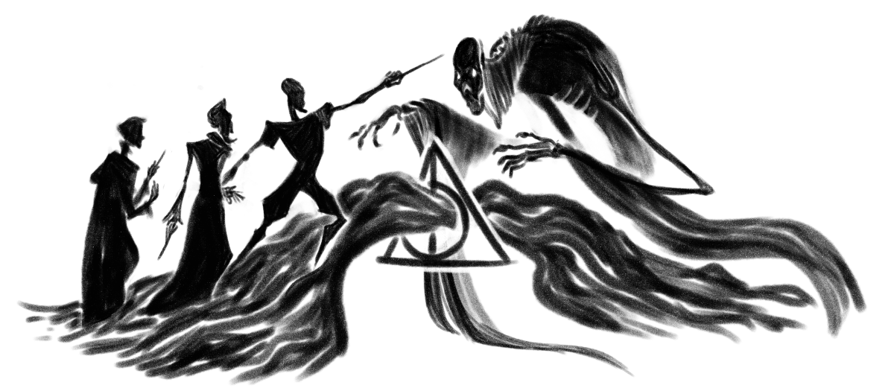
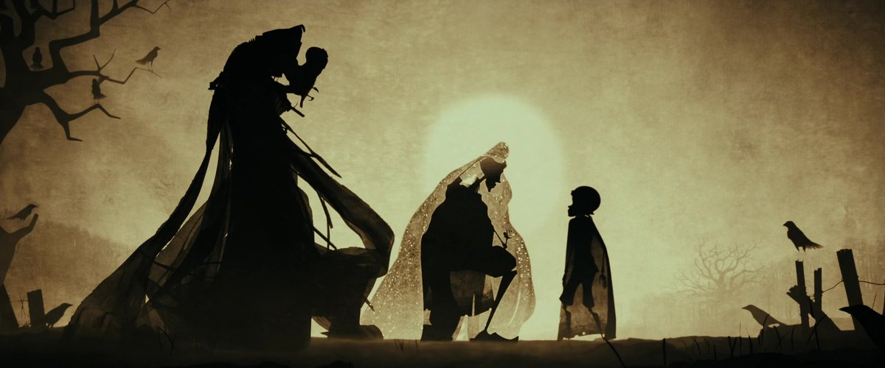

Одна из древних легенд, записанная Бардом Бидлем и
основанная на истории братьев Певерелл — Антиоха, Кадма и Игнотуса.
One of the ancient legends recorded by the Bard Beadle and based on the story of the Peverell
brothers — Antiochus, Cadmus and Ignotus.

Брели как-то три брата темным вечером по заброшенной извилистой дороге и пришли они к реке, и была та рика так глубока, что вброд не перейти, и так стремительна, что вплавь не перебраться. Однако братья были искусными волшебниками, они просто взмахнули своими палочками, и перекинулся мост над предательскими водами. И лишь дошли они до середины реки, как путь им преградил неизвестный, чьё лицо было скрыто под капюшоном. И Смерть заговорила с ними.
Она была очень сердита из-за того, что её обманули три новые жертвы, ведь обычно путешественники тонули в реке. Но Смерть была коварна. Она притворилась, будто восхищается магическим мастерством братьев, и сказала, что каждый из них заслуживает награду за то, что они смогли перехитрить её.
Так, старший брат, воин по натуре, попросил о волшебной палочке. И палочка та должна быть более могущественной, чем любая из существующих, такая, что хозяин её всегда сможет одерживать победы, палочка, достойная волшебника, победившего Смерть! Тогда Смерть подошла к бузине, росшей на берегу реки, сделала из её ветви волшебную палочку и отдала её старшему брату.
Средний брат, будучи человеком высокомерным, решил еще больше унизить Смерть и попросил для себя власти отзывать у Смерти других людей. Тогда Смерть выбрала на речном берегу камень и отдала его второму брату, сказав, что этот Камень обладает силой возвращать обратно тех, кто уже мёртв.
И, наконец, Смерть спросила третьего, младшего брата, чего бы он пожелал. Младший брат был самым скромным, но вместе с тем и самым мудрым из всех братьев, и он не доверял Смерти, поэтому попросил то, что дало бы ему возможность уйти так, чтобы Смерть не смогла бы его преследовать. И очень неохотно Смерть вручила ему свою собственную Мантию-Невидимку.
После этого Смерть посторонилась и позволила троим братьям продолжить свой путь, и они двинулись дальше, удивленно обсуждая своё приключение и восхищаясь дарами, которыми наградила их Смерть. Но вскоре каждый из братьев пошёл своим собственным путем.
Первый брат шёл больше недели, пока не достиг дальней деревни. Там он разыскал волшебника, с которым был не в ладу. Разумеется, вооруженный Старшей Палочкой, он не мог проиграть последовавшую за ссорой дуэль. Оставив мертвого противника лежать на земле, старший брат отправился в трактир, где громко похвалялся мощью волшебной палочки, отобранной им у Смерти, и непобедимостью, дарованной ею. Глубокой ночью другой волшебник прокрался к старшему брату, который лежал в своей кровати, не помня себя от выпитого вина. Вор взял палочку, и для пущей уверенности перерезал старшему брату глотку.
Так Смерть забрала к себе первого брата
Тем временем второй брат оправился к своему родному дому, в котором жил в одиночестве. Там он вынул камень, обладавший властью возвращать мертвых, и трижды повернул его в руке. К его изумлению и восторгу образ девушки, которую он когда-то надеялся взять в жены, но потерял из-за её безвременной кончины, тот час же предстал перед ним.
Однако она была печальна и холодна, будто отделенная от него незримой завесой. Хоть она и возвратилась в мир живых, но по-настоящему уже не принадлежала ему, и это причиняло ей стрдания. В конце концов, второй брат, обезумев от безнадежной тоски, покончил с собой и таким образом по-настоящему воссоединится с любимой.
Так Смерть забрала к себе второго брата.
Но как ни пыталась Смерть на протяжении многих лет отыскать третьего брата, ей это так и не удалось. Только достигнув глубокой старости младший брат, наконец, расстался с Мантией-Невидимкой, передав её своему сыну. И он приветствовал Смерть, как старого приятеля, и охотно, как равный, последовал за нею к завершению своей жизни.

There were once three brothers who were traveling along a lonely, winding road at twilight. In time, the brothers reached a river too deep to wade through and too dangerous to swim across. However, these brothers were learned in the magical arts, and so they simply waved their wands and made a bridge appear across the treacherous water. They were halfway across it when they found their path blocked by a hooded figure.
And Death spoke to them. He was angry that he had been cheated out of three new victims, for travelers usually drowned in the river. But Death was cunning. He pretended to congratulate the three brothers upon theirmagic and said that each had earned a prize for having been clever enough to evade him.
So the oldest brother, who was a combative man, asked for a wand more powerful than any in existence: a wand that must always win duels for its owner, a wand worthy of a wizard who had conquered Death! So Death crossed to an elder tree on the banks of the river, fashioned a wand from a branch that hung there, and gave it to the oldest brother. Then the second brother, who was an arrogant man, decided that he wanted to humiliate Death still further, and asked for the power to recall others from Death. So Death picked up a stone from the riverbank and gave it to the second brother, and told him that the stone would have the power to bring back the dead.
And then Death asked the third and youngest brother what he would like. The youngest brother was the humblest and also the wisest of the brothers, and he did not trust Death. So he asked for something that would enable him to go forth from that place without being followed by Death. And death, most unwillingly, handed over his own Cloak of Invisibility.
Then Death stood aside and allowed the three brothers to continue on their way, and they did so, talking with wonder of the adventure they had had, and admiring Death’s gifts. In due course the brothers separated, each for his own destination.
The first brother traveled on for a week or more, and reaching a distant village, sought out a fellow wizard with whom he had a quarrel. Naturally with the Elder Wand as his weapon, he could not fail to win the duel that followed. Leaving his enemy dead upon the floor, the oldest brother proceeded to an inn, where he boasted loudly of the powerful wand he had snatched from Death himself, and of how it made him invincible.
That very night, another wizard crept upon the oldest brother as he lay, wine-sodden, upon his bed. The thief took the wand and, for good measure, slit the oldest brother’s throat.
And so Death took the first brother for his own.
Meanwhile, the second brother journeyed to his own home, where he lived alone. Here he took out the stone that had the power to recall the dead, and turned it thrice in his hand. To his amazement and his delight, the figure of the girl he had once hoped to marry, before her untimely death, appeared at once before him. Yet she was sad and cold, separated from him as by a veil. Though she had returned to the mortal world, she did not truly belong there and suffered. Finally the second brother, driven mad with hopeless longing, killed himself so as truly to join her.
And so Death took the second brother for his own.
But though Death searched for the third brother for many years, he was never able to find him. It was only when he had attained a great age that the youngest brother finally took off the Cloak of Invisibility and gave it to his son. And then he greeted Death as an old friend, and went with him gladly, and, equals, they departed this life.”